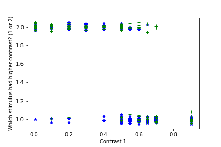
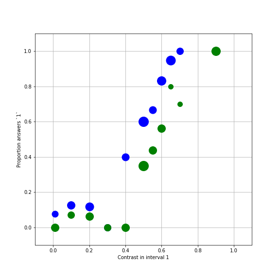

Introduction
Introduction: models and why we like them
Learning Objectives
- Learners can define what a model is.
- Learners can define model parameters and model fitting.
- Learners can restate the benefits of modeling
- Learners can explain the utility of modeling applied to their data.
To understand why you would want to fit models in your research, let’s first consider an experiment in visual neuroscience (this experiment was conducted by Ariel Rokem in collaboration with Ayelet Landau, and the data was collected by Ayelet while she was at the Ernst Strüngmann Institute in Frankfurt).
In these experiments, participants viewed a stimulus that contained a grating. In each trial of the experiment two gratings were displayed in quick succession.
The first grating might look something like this:

While the second would always look like this:

In each trial of the experiment, participants had to say which of the gratings (the first grating, or the second grating) had higher contrast.
Let’s look at the experimental data from one participant. We have two files from this one subject in csv files, scipy-optimize-data/ortho.csv and scipy-optimize-data/para.csv. As their names suggest they come from two different runs of the experiment: one in which the surrounding stimulus was oriented in the parallel orientation relative to the center stimulus and one in which the surrounding stimulus was orthogonal to the center stimulus. The files contain three columns: contrast1 is the contrast in the first interval, contrast2 is the contrast in the second interval and answer is what the participant thought had higher contrast. We will use the function mlab.csv2rec to read the data into a numpy record array:
from matplotlib import mlab
ortho = mlab.csv2rec('scipy-optimize-data/ortho.csv')
para = mlab.csv2rec('scipy-optimize-data/para.csv')If you take a look at the data you will see that the contrast in the second interval was always 0.3 (30% contrast). That’s because this stimulus served as a reference stimulus, to help participants as an anchor. In other experiments, we also varied that, but, for the purpose for our analysis here, we can safely ignore that column altogether and only look at the contrast in the first interval. Let’s take a look at the data. First, we are just going to plot the raw data as it is. We will consider the contrasts as our independent variable, and the responses as the dependent variables.
import matplotlib.pyplot as plt
import numpy as np
%matplotlib inline
fig, ax = plt.subplots(1)
# We apply a small vertical jitter to each point, just to show that there are
# multiple points at each location:
ax.plot(ortho['contrast1'], ortho['answer'] +
np.random.randn(len(ortho)) * 0.02 , '*')
ax.plot(para['contrast1'], para['answer'] +
np.random.randn(len(para)) * 0.02 , '+')
ax.set_ylim([0.9, 2.1])
ax.set_xlabel('Contrast 1')
ax.set_ylabel('Which stimulus had higher contrast? (1 or 2)')
There seems to be a trend in the data: the larger the contrast in the first interval, the more likely the subject was to press the ‘1’ button. That’s a reasonable thing to do, but it’s hard to see and hard to quantify in this form. Instead, we will transform this data into a plot in which the independent variable is the contrast in interval 1 and the dependent variable is the proportion of trials for which the subject pressed the ‘1’ key for each contrast. Let’s define a function that will do that for us:
def transform_data(data):
"""
Function that takes experimental data and gives us the dependent/independent
variables for analysis
Parameters
----------
data : rec array
The data with records: `contrast1`, `contrast2` and `answer`
Returns
-------
x : The unique contrast differences.
y : The proportion of '2' answers in each contrast difference
n : The number of trials in each x,y condition
"""
contrast1 = data['contrast1']
answers = data['answer']
x = np.unique(contrast1)
y = []
n = []
for c in x:
idx = np.where(contrast1 == c)
n.append(float(len(idx[0])))
answer1 = len(np.where(answers[idx] == 1)[0])
y.append(answer1 / n[-1])
return x,y,nWe separately transform the data into proportions for each one of the data files:
And visualize that:
fig, ax = plt.subplots(1)
# To plot each point with size proportional to the number of trials in that condition:
for x,y,n in zip(x_ortho, y_ortho, n_ortho):
ax.plot(x, y, 'bo', markersize=n)
for x,y,n in zip(x_para, y_para, n_para):
ax.plot(x, y, 'go', markersize=n)
ax.set_xlabel('Contrast in interval 1')
ax.set_ylabel('Proportion answers `1`')
ax.set_ylim([-0.1, 1.1])
ax.set_xlim([-0.1, 1.1])
ax.grid('on')
fig.set_size_inches([8,8])
Obviously there is a systematic relationship between the contrast and the chances that this subject thought that the first interval had the higher contrast. For example, when the contrast was much higher in interval 1 ( e.g. 0.9), this person never said that the second interval had higher contrast. Likewise, when the contrast was very low, this person almost never said that the contrast in interval 1 had been higher. In the middle, there seems to be a monotonic relationship between the variables. Also, notice that the two sets of data (orthogonal and parallel) seem to be slightly different.
Can we say something more precise? For example, we might be interested in the contrast for which answers of ‘1’ and answers of ‘2’ are equally likely. This is known as the point of subjective equality (or PSE) and we can use it to compare different conditions in this experiment and in other experiments, compare different participants, etc.
In order to derive this quantity, or other quantities we approximate the data with a continuous function. Given this function, we can ask what is the x value of the function that corresponds to a y of exactly 0.5? This function is what we will call here a “model”. These functions usually describe the relationship between dependent and independent variables through a set of some other variables that we will call “model parameters”. The computational process of finding the values of the paramters that provide values of the model that most accurately approximate the data is what we will call “model fitting”.
Why do we like models?
Models derived from data are useful for several reasons:
They allow you to explain the data you have: summary statistics of the data, such as the mean of some variable, or the variance of this variable, are often not the best explanation of the data you have observed, in terms of the theory. For example, in the data we have observed in our experiment, a useful quantity is the PSE, which tells us what the perceived contrast of the surrounding grating was. This quantity is not readily present in summary statistics of the data. A functional form of a model is a mathematical formula that relates systematic changes in measured dependent variables, based on experimental manipulations of the independent variables. The functional form of the model varies with changes in model parameters. In the typical case, parameters are variables specificied in the model, that are neither your dependent variables nor your independent variables. If the model parameters correspond to theoretically meaningful quantities (such as the PSE), that can make the model useful in explaining the data and help test hypotheses about the theory behind the experiment.
They allow you to predict data you haven’t collected: In many cases, assuming that the parameters don’t change with changes in the independent variables, models allow us to interpolate and predict what the dependent variables would have been like in other values of the independent variables. Even extrapolate to conditions that have not measured. For example, because measuring in these conditions is difficult for practical reasons.
They allow us to build theories: By applying a modeling approach to data, we can hope to build an incremental knowledge abouth the domain we are studying. For example, Newton’s law of gravitation provides us with a quantitative prediction on the behavior of any two bodies. The observation that this model does not perform well in all conditions, led to Einstein’s theory of general relativity, which provides a generalization of this law (or model).
Modeling in your field
Give an example of data that you use in your research and a model applied to the data.
In the following two sections, we will separately discuss linear models, and contrast these with non-linear models.